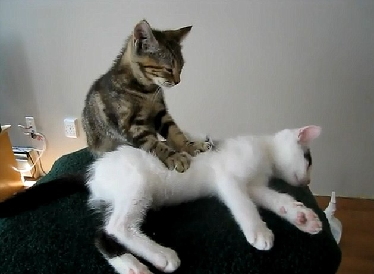

Memijat adalah salah satu kegiatan yang juga dilakukan oleh kucing. Kucing memijat dengan cara menekankan telapak tangannya secara bergantian (kanan dan kiri), dan ada juga yang memijat dengan menarik (mengeluarkan) cakarnya. Kucing biasanya memijat manusia atau kucing lain dengan disertai suara dengkuran. Ketika anak kucing sedang menyusui, mereka pasti akan memijat-mijat perut induknya. Hal ini dilakukan untuk melancarkan aliran air susu melalui puting-puting induknya. Jika kucing memijat pemiliknya, hal tersebut telah menandakan bahwa mereka merasa aman dan nyaman. Selain itu, dia juga telah mengklaim orang yang dipijatnya sebagai pemiliknya.